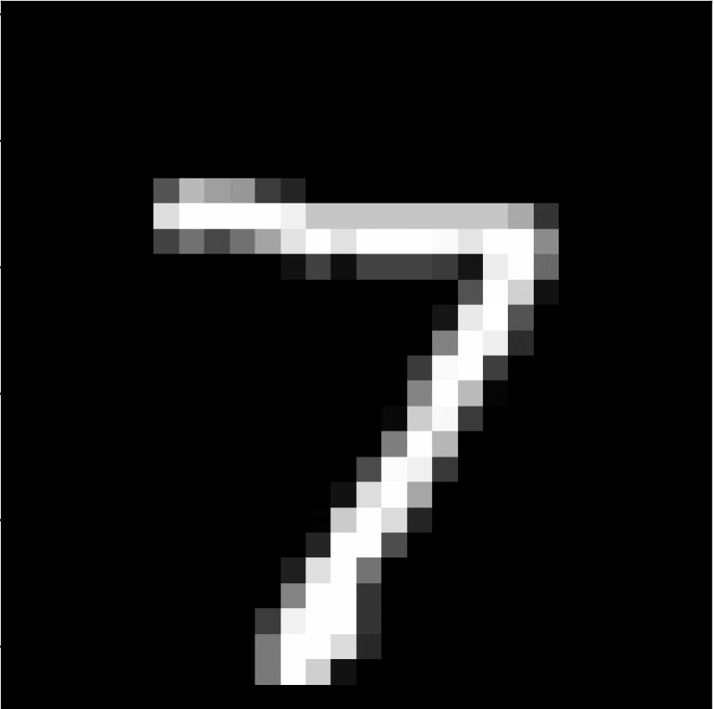

Crafting Handwritten Digit Recognition Models without Neural Networks
A K-Nearest Neighbor machine learning approach to the classic handwritten digit classification problem | View Code
"You’re the average of the five people you spend the most time with."
- Jim Rohn
Recognizing Handwritten Digits
Writing a program to classify hand-written digits is one of the classic introductory challenges for students new to artificial intelligence and neural networks. The problem requires the program to look at a small (28x28) grayscale image of a single digit and output the correct number, which is challenging because a computer doesn’t process data and images the same way we do.
Machine learning is a branch of artificial intelligence that refers to any algorithm that modifies itself to optimize a certain task or goal. Today, the most popular AI implementations rely on algorithms like neural networks (AlphaGo) and transformers (ChatGPT), but there are a lot of other methods like the one we’ll explore today. We can actually solve this particular class of problem without any fancy neural networks by cleverly restructuring the problem and applying a much (mathematically) simpler algorithm called K-Nearest Neighbors instead. With an accuracy of about 90%, it is not the most powerful technique, but performs surprisingly well for such a fundamentally simple idea.
Heuristically, the algorithm stores representations of the images and their solution digits from the training data in memory. When a new image is input, the algorithm finds the most similar images in its training data, tells them to “vote” on which digit the image represents, and outputs the winning digit as the answer.
Recognizing Handwritten Digits
The first thing we have to do before we can start classifying images is define distance, also known as choosing a “metric”. This may feel a little silly and completely irrelevant - distance after all is just the amount of space between two objects! However, a lot of the power and utility of mathematics comes from rigorously defining even the most complex ideas by stripping away all of the semantic ambiguity. This approach allows us to consistently and reliably create and apply theorems that lead to amazing results like this classification solution.
The simple definition of distance above might work in the three dimensional space we are accustomed to, but what about four dimensional space? What happens when we have to deal with a hundred dimensions, or even a million? We can compute the length of a straight line from point $x$ to point $z$ with the Euclidean metric:
$d(x, z) = |x - z| = \sqrt{\sum_{i=1}^{k} (x_i - z_i)^2}$
Part of the nearest neighbor problem requires finding the closest data point or object to a given reference point among a set of scattered points or objects. The goal is to determine the most similar or proximate entity based on the metric we just defined. For example, we might be looking for the friend closest to us in a crowded market, deciding which fruits in a basket have the most similar color, or identifying the closest two vectors in an abstract vector space.

K-D Trees
One approach to finding the closest friend is to check every single point, or friend, compute the distance, and return the closest one. This exhaustive search approach takes so long that it only works on relatively small datasets. Fortunately, we have an alternative in K-D trees.
A K-D tree (short for K-Dimensional tree or a tree in the Kth dimension) is a data structure that organizes points in a multi-dimensional space. It enables efficient searching and retrieval of points based on their proximity to a query point. The process of construction and application of a K-D tree can be understood as follows:
- Construction: Initially, the algorithm selects a pivot point from the given dataset. The pivot divides the space into two regions along a chosen dimension. Points to the left of the pivot are assigned to the left subtree, while those to the right are assigned to the right subtree.
- Recursive Partitioning: The process continues recursively on each subtree, selecting a new pivot and dividing the space further along a different dimension. This alternation of dimensions ensures balanced and efficient partitioning.
- Tree Structure: The resulting K-D tree forms a hierarchical structure, where each node represents a pivot point and has two child nodes corresponding to the left and right subtrees.
- Efficient Search: To find the nearest neighbor or points within a specific range, a search query follows a path down the tree based on comparisons between the query point and the pivot points. It selectively explores regions of the tree, pruning branches that are unlikely to contain the desired points. By comparing distances and intelligently traversing the tree, the search algorithm efficiently narrows down the potential candidates.
- Balancing: To maintain efficiency, balancing techniques such as median or mean splitting can be applied during construction. These ensure that the tree remains balanced, preventing degeneration into a long linear structure and optimizing search performance.
In short, K-D trees organize points in a hierarchical structure, recursively dividing space along different dimensions. This structure facilitates efficient searching by selectively exploring relevant regions. By harnessing the structure of K-D trees, we can quickly find and select the K nearest neighbors to any image of a digit, which will be relevant once we begin exploring how the actual algorithm works. To be clear, the “k” in K-D tree refers to the dimension of the data (728 in our case), while the “k” in k-nearest neighbors refers to the number of neighbors we will compare (we’ll use 4 for our demonstration).
The Nearest Neighbor Algorithm
We’ve finally gotten to the purpose of all that math we’ve been reviewing. The k-nearest neighbor algorithm is a simple yet powerful technique used for classification problems like our own. It operates based on the principle that objects or data points with similar characteristics tend to exist close to each other in the feature space. Here's a concise explanation of how the K-NN algorithm works:
- Data Preparation: First, the algorithm requires a labeled dataset, where each data point is associated with a class or a value. It also requires a query point for which we want to determine the class or value. We will use the MNIST dataset of 3000 28x28 grayscale labeled images of handwritten digits.
- Constructing the K-D Tree: To efficiently find the nearest neighbors of a new handwritten digit, we construct a K-D tree from the labeled dataset. This step will enable efficient searching by eliminating large portions of the feature space that do not contain relevant neighbors.
- Querying the K-D Tree: When a query image is provided, the algorithm traverses the K-D tree to search for the k nearest neighbors. Starting from the root node, it compares the query image's features with the features stored in each node and selects the branch that is closer to the query image using the distance metric we defined earlier. By iteratively moving down the tree, it eventually reaches leaf nodes that contain potential nearest neighbors.
- Neighbor Selection: The k-NN algorithm selects the $k$ nearest neighbors to the query point based on the calculated distances. These neighbors are the data points with the smallest distances to the query point.
- Voting or Averaging: For classification tasks, the algorithm determines the class of the query point by majority voting among the k nearest neighbors. Each neighbor's class has a vote according to its label, and the class with the most votes becomes the predicted class for the query point.
- Output: The algorithm outputs the predicted class or value for the query point based on the results of the voting step.
The k-NN algorithm is flexible and can be adapted to handle different scenarios. The choice of the value for k, the number of neighbors to consider, is crucial and depends on the dataset and problem at hand. A smaller k value leads to more local and potentially noisy decisions, while a larger k value captures more global information but may overlook local patterns.
I've included the most complicated part of the program below. I'll explain how the code gets to this method for a little bit of context. When we want to classify a new image, we pass it to the "predit" method of the KNeighborsClassifier class. This class already has the constructed K-D tree as an attribute. The predict method returns the best result by calling the tree's query method, which is described in detail below.
def query(self, z):
"""Find the value in the tree that is nearest to z.
Parameters:
z ((k,) ndarray): a k-dimensional target point.
Returns:
((k,) ndarray) the value in the tree that is nearest to z.
(float) The Euclidean distance from the nearest neighbor to z.
"""
def KDSearch(current, nearest, dStar):
# base case
if current is None:
return nearest, dStar
# initialize search values
x = current.value
i = current.pivot
# if the norm of x-z is less than d* update nearest and d*
if la.norm(x - z) < dStar:
nearest = current
dStar = la.norm(x - z)
# update nearest and d* recursively with the appropriate child
if z[i] < x[i]:
nearest, dStar = KDSearch(current.left, nearest, dStar)
if z[i] + dStar >= x[i]:
nearest, dStar = KDSearch(current.right, nearest, dStar)
else:
nearest, dStar = KDSearch(current.right, nearest, dStar)
if z[i] - dStar <= x[i]:
nearest, dStar = KDSearch(current.left, nearest, dStar)
return nearest, dStar
# return the results of the KD search starting from the root
node, dStar = KDSearch(self.root, self.root, la.norm(self.root.value - z))
return node.value, dStar
In my exploration of handwritten digit classification using the k-nearest neighbors algorithm, I've been captivated by the remarkable ways in which mathematics can uncover meaningful patterns in images and data. It's truly amazing to witness how mathematical concepts can be applied to accurately recognize and differentiate handwritten digits. This experience demonstrates the potential of mathematics in unraveling new insights and making advancements in data analysis. I am excited to see how mathematics will continue to play a vital role in applications like this, expanding our understanding and shaping the world around us in remarkable ways. Please visit my GitHub repository if you’d like to view the full program.